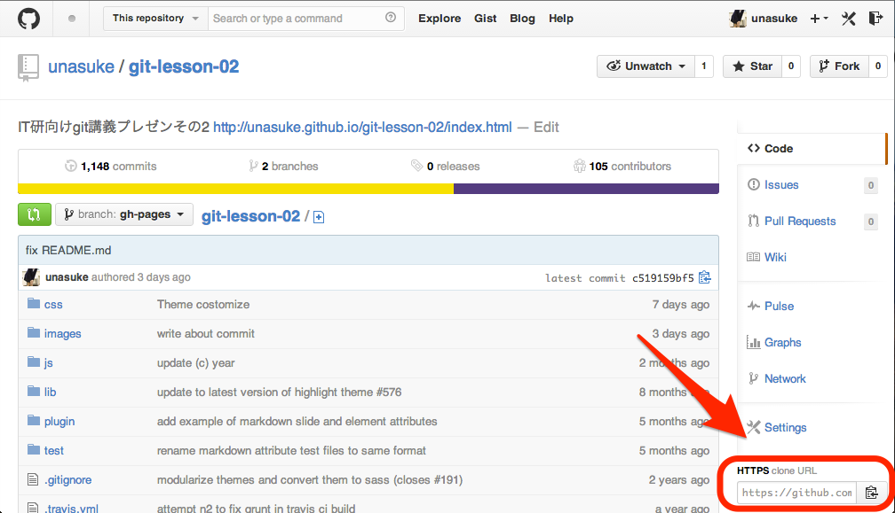
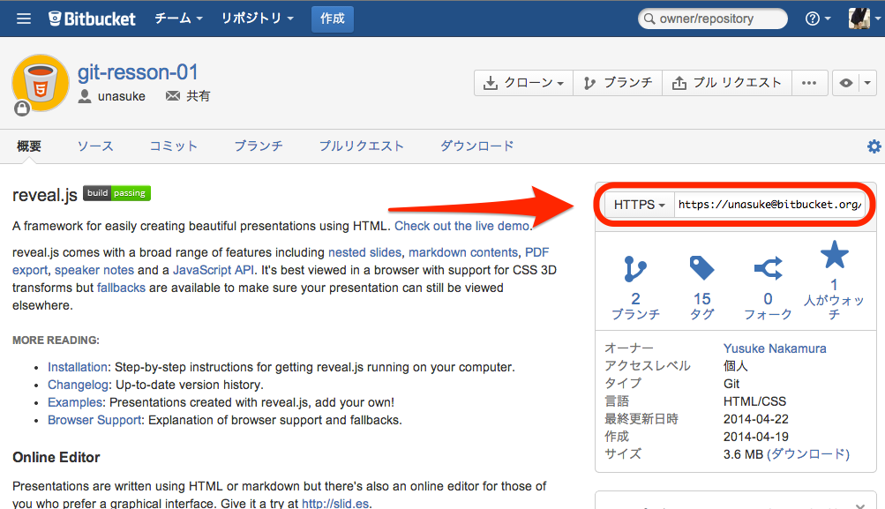

Git lesson3
うなすけ
はじめに
Link URLが多いので、GitHub Pagesに上げました。以下のURLから同じものが見れます。
clone
clone
目的は、「コードが失われても取り戻せるように」
なら取り戻せないと意味が無い!
clone
今回は「何もかも消えた！！」ときに、bitbucketやGitHubから取り戻す方法をやります
他には「間違えてあのファイルを消してしまった！」って時とかねclone
試しにやってみよう
$ git clone https://github.com/unasuke/git-lesson-02.git
このスライドがまるっと手元に降りてきたかな？
clone
試しにやってみようその2
自分のgitリポジトリを、commitしてpushして、全部削除してからcloneしてみよう
$ git clone リポジトリのURL
clone
URLはどこに？
clone
URLはどこに？
次回予告
- checkoutとは
Pull Requestについてはもう少し後回しにさせて